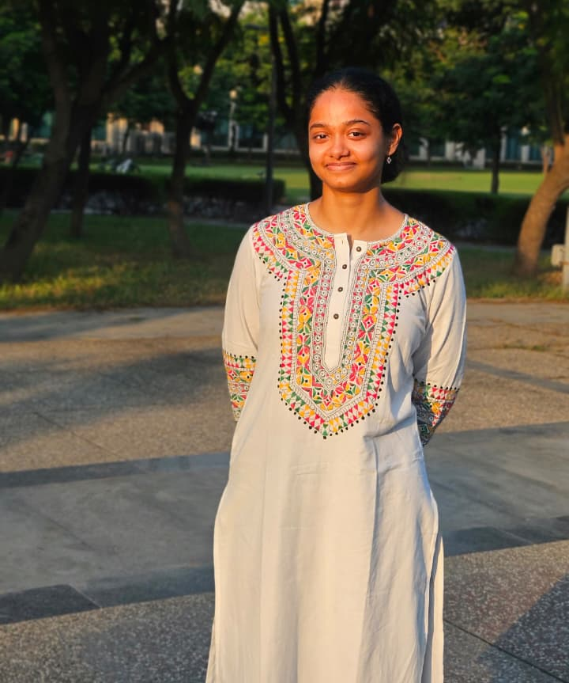
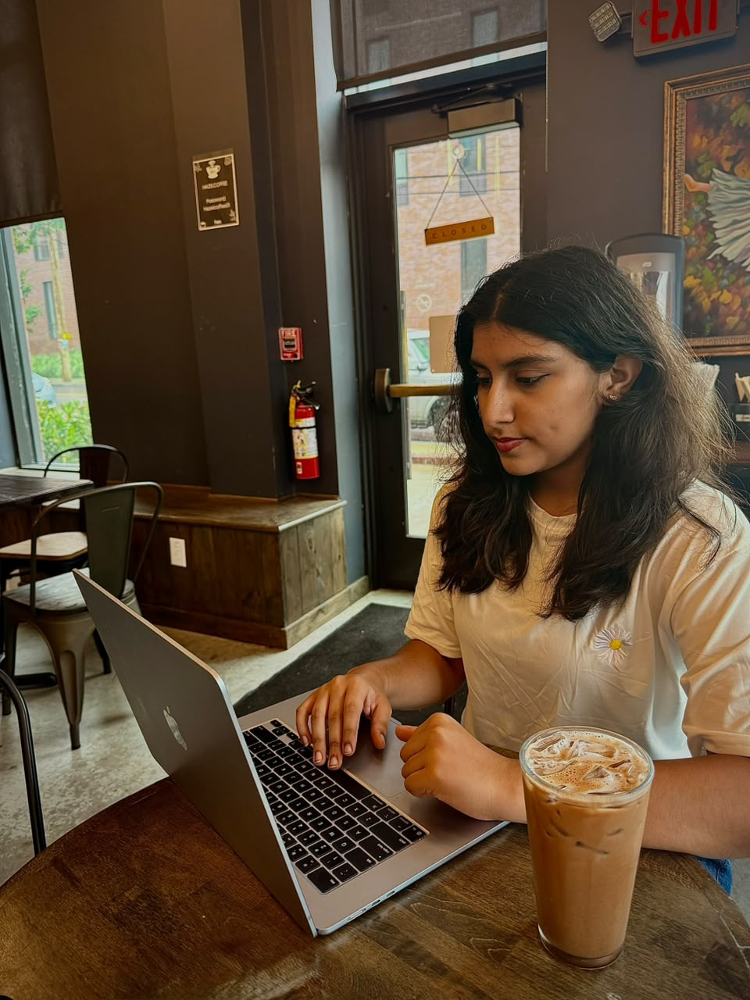

About the Committee
The UNCND provides a platform for delegates to examine the global impact of illegal drugs on public health, security, and development. Through debate and resolution writing, participants will explore innovative strategies for combating trafficking, supporting rehabilitation, and fostering international collaboration.
Agenda
- Addressing global conflicts and peacekeeping operations
- Sanctions and international enforcement mechanisms
- Security implications of emerging technologies
Background Guide
Executive Board

Chair Person: Aarushi Dhar
At 19, Aarushi Dhar is a Second-year undergraduate student pursuing Biotechnology, with a strong academic inclination toward Biology. Her interest in global affairs began early, and she has consistently gravitated toward issues of security and conflict, drawn to their complexity and real-world impact. Over the years, she has honed her approach to diplomacy through MUN by emphasizing dialogue, empathy, and practical solutions. Beyond academics and diplomacy, Aaruushi is a professionally trained dancer under Shiamak Davar, and also enjoys painting, singing, writing poetry, and exploring creative expression. She loves the stage and likes being a little hatke, bringing her own distinct personality to every space she is part of. An active and outdoorsy person, she is equally enthusiastic about sports and the energy they bring to her life. Balancing scientific study, diplomacy, the arts, and physical pursuits, Aaruushi continues to explore how different disciplines and perspectives can intersect to shape her understanding of the world.

Vice-Chair Person: Tanvi Kodali
"What doesn't kill you makes you stronger." Tanvi doesn't fold. She adapts. Tanvi doesn't really believe in staying the same, with suffering comes a lesson to learn. Senior at Oakridge International School, Gachibowli, taking Math, Psychology, and Economics HL. She treats setbacks like side quests and somehow keeps finding a way to level up. She’s excited for DPSH MUN!